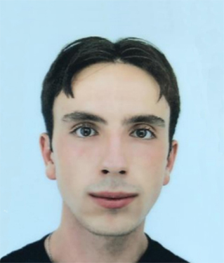
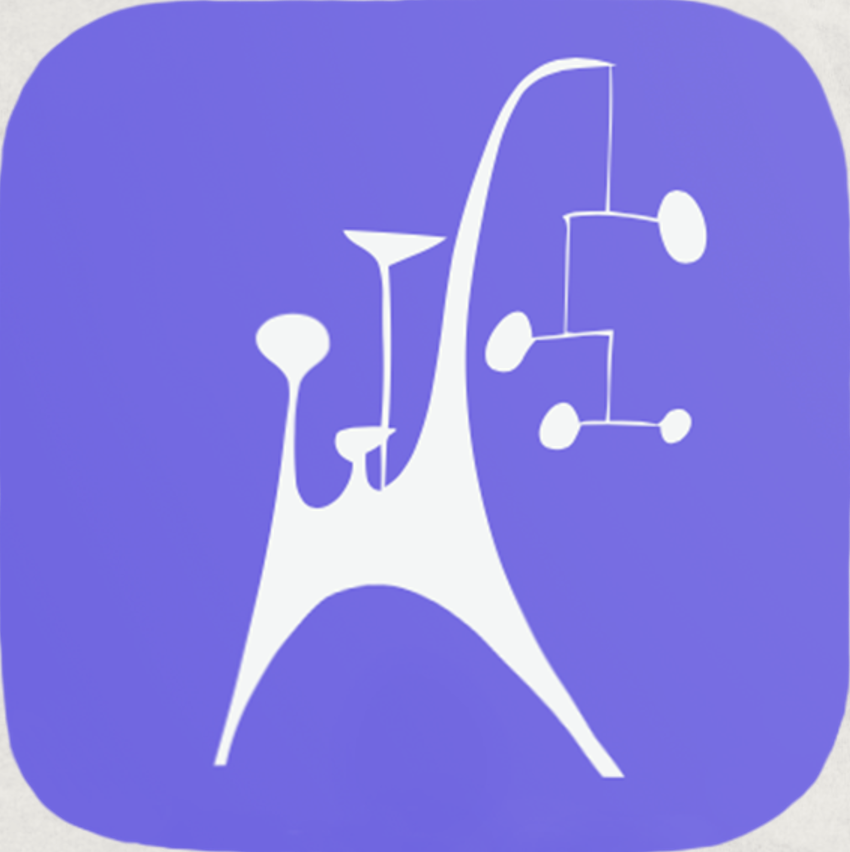
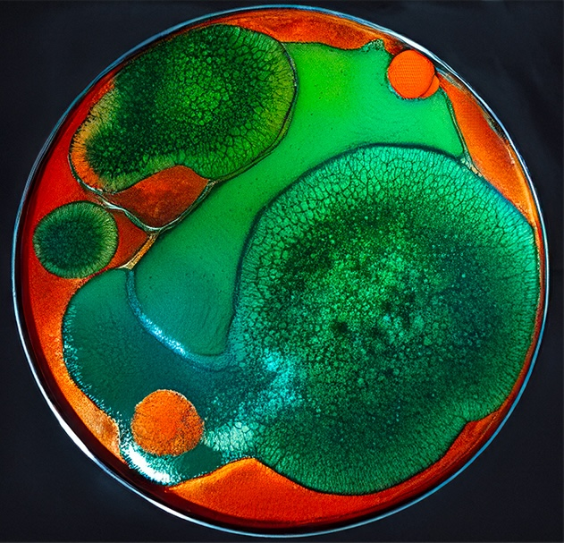

<!DOCTYPE html>
<html lang="fr"></html>
<html>
  <head>
    <title>Profil de Joaquim</title>
    <meta name="viewport" content="width=device-width, initial-scale=1">
    <meta name="description" content="Profil de Joaquim Zapater, étudiant en Master d'école de commerce, fondateur d'ARTMAPS et co-fondateur de ROULANCE. Entrepreneur passionné par l'Art et les nouvelles technologies. Découvrez mon parcours, mes compétences et mes projets.">
    <meta charset="utf-8">
    <link rel="stylesheet" href="https://use.fontawesome.com/releases/v6.1.2/css/all.css">
    <link rel="preconnect" href="https://fonts.googleapis.com">
    <link rel="preconnect" href="https://fonts.gstatic.com" crossorigin>
    <link href="https://fonts.googleapis.com/css2?family=Domine:wght@400..700&family=Fira+Sans+Condensed:ital,wght@0,100;0,200;0,300;0,400;0,500;0,600;0,700;0,800;0,900;1,100;1,200;1,300;1,400;1,500;1,600;1,700;1,800;1,900&display=swap" rel="stylesheet">
    <link rel="stylesheet" href="style.css">
  </head>

  <body>
    <div id="banner">
      
        <h1>Joaquim Zapater</h1>
          <h2>Bienvenue sur mon profil!</h2>
            <h3>Entrepreneur & Passionné d'Art</h3>
    </div>

    <div>
      <p>🌟 Fortement motivé, 🎯ambitieux et 👨‍💻dévoué, je souhaite faire carrière:
      </p>
      <ul>
        <li>🎨 Au service de notre patrimoine culturel, animé par le désir de contribuer de manière significative et pertinente au domaine de la culture.</li>

        <li>🧵Dans le secteur de la mode, avec pour objectif de contribuer à façonner l'identité visuelle d'une marque qui défie les normes préétablies,
          tout en faisant la promotion de la mode en tant que vecteur de changement culturel, social et esthétique en synergie avec l'art.</li>

        <li>🚀 En bref, convaincu que l'innovation est la clé de tout projet, je voue ma vie professionnelle au développement de projets novateurs,
          avant gardistes, enclins à générer une empreinte durablement distinctive et profitable au plus grand nombre.</li>

        <li>🔗 Je suis ouvert aux échanges, collaborations et discussions autour de la culture, l'entrepreneuriat, la mode, l'innovation et bien plus encore. N'hésitez pas à me contacter pour partager vos idées et projets ! ✨</li>
      </ul>
    </div>


    <div>
      
      <h3>Directeur-fondateur
      Artmaps · Indépendant</h3>
        <h4>De sept. 2023 à aujourd’hui · 11 mois
        Ville de Paris, Île-de-France, France</h4>
         <p>Application qui entends redéfinir la valorisation du patrimoine culturel hors les murs.
          L'une de ses vocations principales est de révolutionner la manière dont le public explore et interagit avec l'art en plein air en proposant une cartographie interactive détaillée alliée à différents itinéraires voués à rendre les œuvres accessibles notamment aux personnes à mobilité réduite, et a permettre leur appréhension en proposant des pistes de lecture des œuvres, des informations détaillées sur les artistes, les médiums et les techniques employés. Son autre vocation est de rendre leur lettre de noblesse aux patrimoine sculptural hors les murs des fondations d'arts, musées nationaux et ayants droits, en les revalorisant et en les rendant financièrement profitables.</p>
    </div>

    <div>
      
      <h3>Co-fondateur
      Cayò · Indépendant</h3>
        <h4>De sept. 2022 à aujourd’hui · 1 an 11 mois
        Ville de Paris, Île-de-France, France</h4>
          <a href="https://briceroulance.myportfolio.com" class="bouton">Portfolio</a>
          <p>Création d'une marque de mode engagée aux matières premières d'origine européenne, provenant de vêtements en fin de vie et de chutes de tissus de maisons de luxe destinés à être détruits.
          Conception d'un vestiaire unisexe à l'esthétique radicale aux silhouettes surdimensionnées et théâtrale. Les lignes sont épurées, les coupes précises, créant ainsi une esthétique sophistiquée aux inspirations aux confluents de l'histoire de l'art, de l'architecture et de la littérature.</p>
    </div>
    <div>
      <h3>Mes univers :</h3>
        <h4>Suivez-moi sur mes réseaux sociaux pour découvrir les coulisses de mes projets, mes inspirations et bien plus encore :</h4>
          <ul>
            <li><a href="https://www.instagram.com/brende_kell/"><i class="fa-brands fa-instagram"></i></a></li>
            <li><a href="https://www.linkedin.com/in/joaquim-zapater/"><i class="fa-brands fa-linkedin"></i></a></li>
            <li><a href="https://www.facebook.com/profile.php?id=100009857173028"><i class="fa-brands fa-facebook"></i></a></li>


          </ul>
    </div>


  </body>
</html>
